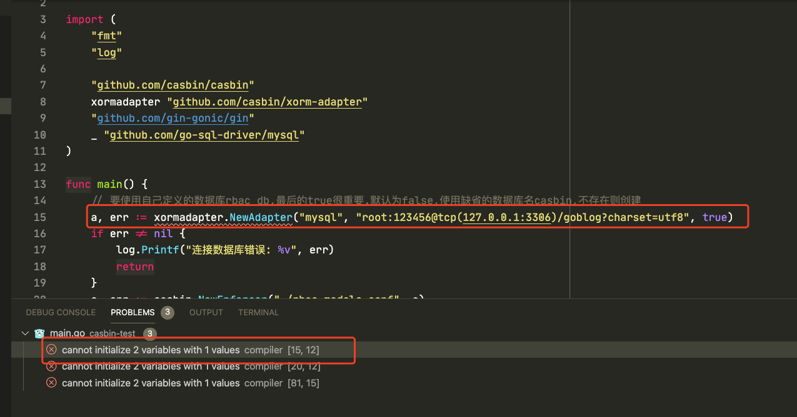
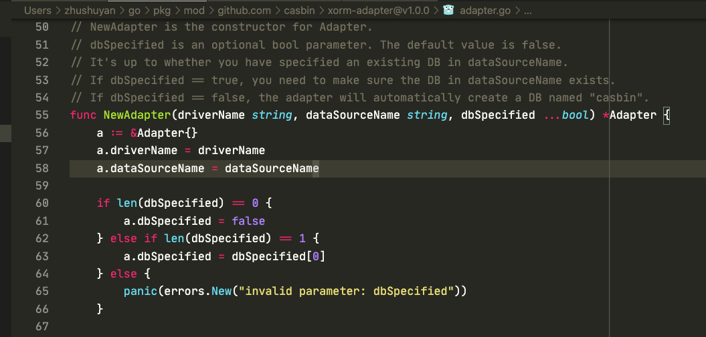
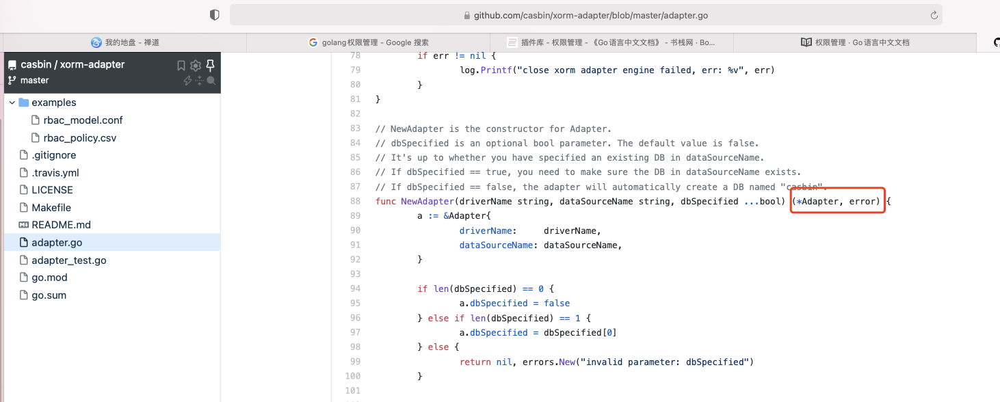
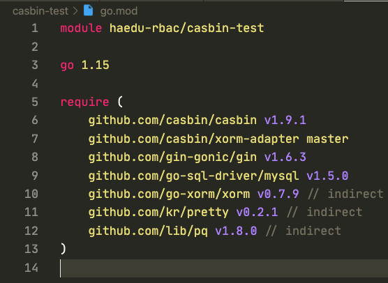
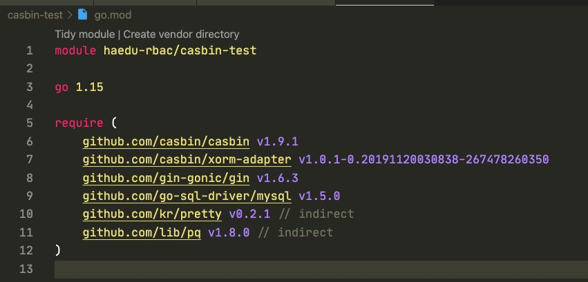

示例程序
基于casbin的权限管理示例
参考:http://www.topgoer.com/gin框架/其他/权限管理.html
示例代码：
package main
import (
"fmt"
"log"
"github.com/casbin/casbin"
xormadapter "github.com/casbin/xorm-adapter"
"github.com/gin-gonic/gin"
_ "github.com/go-sql-driver/mysql"
)
func main() {
// 要使用自己定义的数据库rbac_db,最后的true很重要.默认为false,使用缺省的数据库名casbin,不存在则创建
a, err := xormadapter.NewAdapter("mysql", "root:123456@tcp(127.0.0.1:3306)/goblog?charset=utf8", true)
if err != nil {
log.Printf("连接数据库错误: %v", err)
return
}
e, err := casbin.NewEnforcer("./rbac_models.conf", a)
if err != nil {
log.Printf("初始化casbin错误: %v", err)
return
}
//从DB加载策略
e.LoadPolicy()
//获取router路由对象
r := gin.New()
r.POST("/api/v1/add", func(c *gin.Context) {
fmt.Println("增加Policy")
if ok, _ := e.AddPolicy("admin", "/api/v1/hello", "GET"); !ok {
fmt.Println("Policy已经存在")
} else {
fmt.Println("增加成功")
}
})
//删除policy
r.DELETE("/api/v1/delete", func(c *gin.Context) {
fmt.Println("删除Policy")
if ok, _ := e.RemovePolicy("admin", "/api/v1/hello", "GET"); !ok {
fmt.Println("Policy不存在")
} else {
fmt.Println("删除成功")
}
})
//获取policy
r.GET("/api/v1/get", func(c *gin.Context) {
fmt.Println("查看policy")
list := e.GetPolicy()
for _, vlist := range list {
for _, v := range vlist {
fmt.Printf("value: %s, ", v)
}
}
})
//使用自定义拦截器中间件
r.Use(Authorize(e))
//创建请求
r.GET("/api/v1/hello", func(c *gin.Context) {
fmt.Println("Hello 接收到GET请求..")
})
r.Run(":9000") //参数为空 默认监听8080端口
}
//拦截器
func Authorize(e *casbin.Enforcer) gin.HandlerFunc {
return func(c *gin.Context) {
//获取请求的URI
obj := c.Request.URL.RequestURI()
//获取请求方法
act := c.Request.Method
//获取用户的角色
sub := "admin"
//判断策略中是否存在
if ok, _ := e.Enforce(sub, obj, act); ok {
fmt.Println("恭喜您,权限验证通过")
c.Next()
} else {
fmt.Println("很遗憾,权限验证没有通过")
c.Abort()
}
}
}
go.mod文件
module haedu-rbac/casbin-test
go 1.15
使用 go mod tidy 命令：
$ go mod tidy
go: finding module for package github.com/casbin/casbin
go: finding module for package github.com/go-sql-driver/mysql
go: finding module for package github.com/casbin/xorm-adapter
go: finding module for package github.com/gin-gonic/gin
go: found github.com/casbin/casbin in github.com/casbin/casbin v1.9.1
go: found github.com/casbin/xorm-adapter in github.com/casbin/xorm-adapter v1.0.0
go: found github.com/gin-gonic/gin in github.com/gin-gonic/gin v1.6.3
go: found github.com/go-sql-driver/mysql in github.com/go-sql-driver/mysql v1.5.0
go: finding module for package github.com/lib/pq
go: finding module for package github.com/go-xorm/xorm
go: found github.com/go-xorm/xorm in github.com/go-xorm/xorm v0.7.9
go: found github.com/lib/pq in github.com/lib/pq v1.8.0
go: finding module for package github.com/kr/pretty
go: found github.com/kr/pretty in github.com/kr/pretty v0.2.1
执行之后go.mod文件：
module haedu-rbac/casbin-test
go 1.15
require (
github.com/casbin/casbin v1.9.1
github.com/casbin/xorm-adapter v1.0.0
github.com/gin-gonic/gin v1.6.3
github.com/go-sql-driver/mysql v1.5.0
github.com/go-xorm/xorm v0.7.9 // indirect
github.com/kr/pretty v0.2.1 // indirect
github.com/lib/pq v1.8.0 // indirect
)
示例程序提示的错误

提示返回参数不正确，查看NewAdapter源码：

发现此版本的确返回一个参数。对比github的源码，而是返回的两个参数：

go.mod更改xorm-adapter版本
更改：
github.com/casbin/xorm-adapter v1.0.0
为：
github.com/casbin/xorm-adapter master

执行 go mod tidy 命令，最终显示为：
github.com/casbin/xorm-adapter v1.0.1-0.20191120030838-267478260350

【注】其他类库雷同错误也可按照以上步骤解决。
最终go.mod文件：
module haedu-rbac/casbin-test
go 1.15
require (
github.com/casbin/casbin/v2 v2.14.2
github.com/casbin/xorm-adapter v1.0.1-0.20191120030838-267478260350
github.com/gin-gonic/gin v1.6.3
github.com/go-sql-driver/mysql v1.5.0
github.com/kr/pretty v0.2.1 // indirect
github.com/lib/pq v1.8.0 // indirect
)
修改main.go中import包
import (
"fmt"
"log"
casbin "github.com/casbin/casbin/v2"
xormadapter "github.com/casbin/xorm-adapter"
"github.com/gin-gonic/gin"
_ "github.com/go-sql-driver/mysql"
)
casbin加上版本号~~~